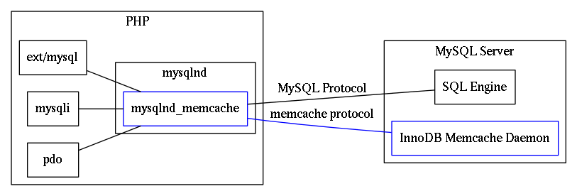

IntroductionThe mysqlnd memcache plugin (mysqlnd_memcache) is an PHP extension for transparently translating SQL into requests for the MySQL InnoDB Memcached Daemon Plugin (server plugin). It includes experimental support for the MySQL Cluster Memcached Daemon. The server plugin provides access to data stored inside MySQL InnoDB (respectively MySQL Cluster NDB) tables using the Memcache protocol. This PHP extension, which supports all PHP MySQL extensions that use mysqlnd, will identify tables exported in this way and will translate specific SELECT queries into Memcache requests.

The MySQL native driver for PHP is a C library that ships together with PHP as of PHP 5.3.0. It serves as a drop-in replacement for the MySQL Client Library (libmysqlclient). Using mysqlnd has several advantages: no extra downloads are required because it's bundled with PHP, it's under the PHP license, there is lower memory consumption in certain cases, and it contains new functionality such as asynchronous queries. The mysqlnd_mmemcache operates, for the most part, transparently from a user perspective. The mysqlnd memcache plugin supports all PHP applications, and all MySQL PHP extensions. It does not change existing APIs. Therefore, it can easily be used with existing PHP applications. The MySQL Memcache plugins add key-value style access method for data stored in InnoDB resp. NDB (MySQL Cluster) SQL tables through the Memcache protocol. This type of key-value access if often faster than using SQL. Key FeaturesThe key features of PECL/mysqlnd_memcache are as follows.
LimitationsThe initial version is not binary safe. Due to the way the MySQL Memcache plugins works there are restrictions related to separators. Prepared statements and asynchronous queries are not supported. Result set meta data support is limited. The mapping information for tables accessible via Memcache is not cached in the plugin between requests but fetched from the MySQL server each time a MySQL connection is associated with a Memcache connection. See mysqlnd_memcache_set for details. On the nameThe shortcut mysqlnd_memcache stands for mysqlnd memcache plugin. Memcache refers to support of the MySQL Memcache plugins for InnoDB and NDB (MySQL Cluster). The plugin is not related to the Memcached cache server. |